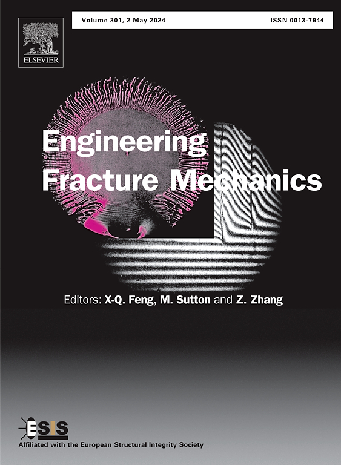

Analytical and solutions-driven professional with a Structural and Geotechnical Engineering background and experience in Data Analytics and Machine Learning, Engineering Design, and Research (both numerical and experimental). With industry experience in structural analysis on Aerospace, Nuclear, and Port Engineering projects.
Current Positions
- Research Scientist at the MIT CEE Rock Mechanics Lab, part of the MIT Earth Resources Laboratory (ERL).
Education
- Ph.D. in Engineering Mechanics (MIT '25).
- MSc, Civil and Environmental Engineering (MIT '18).
- Civil Engineer (UBA '13, Hons).
- Business Analytics Certificate (Sloan '23).
- Graduate Certificate in Technical Leadership (MIT/Gordon '23).
Featured Research

Experimental study of fluid penetration and opening geometry during hydraulic fracturing
Ignacio Arzuaga-García, Herbert Einstein.
Engineering Fracture Mechanics, Volume 230, 2020.
doi
Ignacio Arzuaga-García, Herbert Einstein.
Engineering Fracture Mechanics, Volume 230, 2020.
doi
Abstract: The effect of penetrating and non-penetrating fluids, and of opening shape, on hydraulic fracturing has been extensively studied…